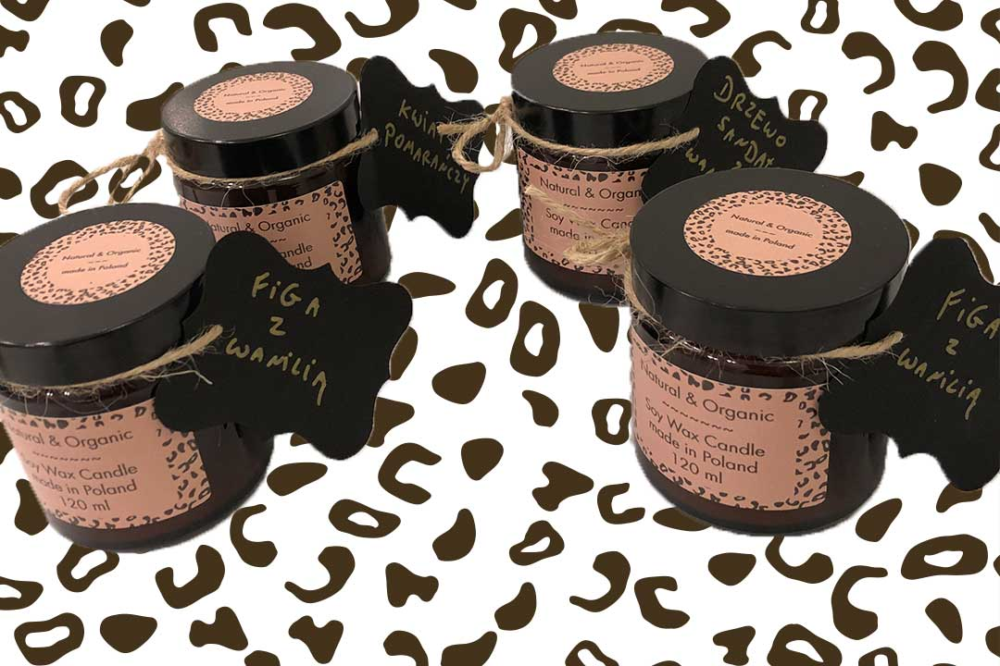
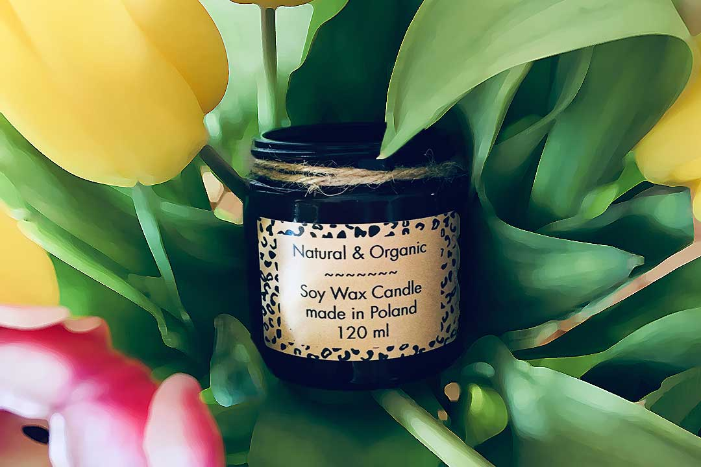
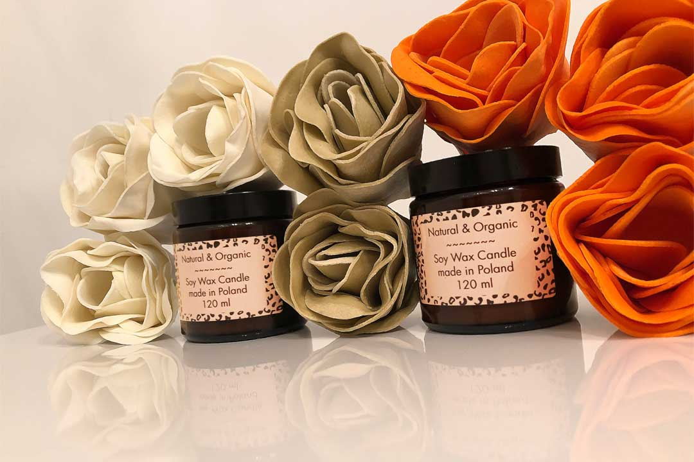

- 
- 
Świece ręcznie robione
od 19.99 PLN
🌿Tworzone są ręcznie wyłącznie z naturalnych olejków roślinnych i wosku sojowego. W 100% naturalne są również ich knoty wykonane z czystej, ekologicznej bawełny, wolne od ołowiu i innych substancji chemicznych
Świece sojowe są bezpieczne dla alergików, dzieci czy nawet astmatyków. Podczas palenia Świecy nie wydziela ona żadnych szkodliwych substancji. Wosk Sojowy spala się wolno więc możemy się dłużej cieszyć tymi świecami